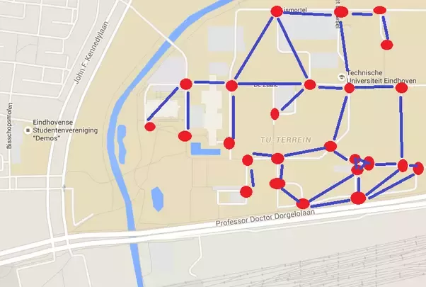
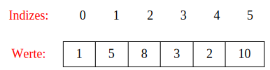

M411 - Algorithmen und Datenstrukturen
<i class="fas fa-graduation-cap"></i> Begriff "Informatik" - was steckt dahinter? ============================= * "Info": Information, Daten * "matik": Mathematik, Technik "Informatik" ist die Verschmelzung der Wörter Information und Mathematik. Es geht also vor allem um die Verarbeitung, Darstellung, Speicherung und Übertragung von Daten auf technischem resp. mathematischem Weg. <i class="fas fa-graduation-cap"></i> Historisches ================= * 300 v. Chr.: Euklid entwickelt Algorithmus zur Bestimmung des GGT * 800 n. Chr.: al Chworesmi / Aufgabensammlung für Kaufleute -> "Liber Algorithmi" * 1574 : Adam Riese erstellt ein Rechenbuch mit mathematischen Algorithmen * 1703 : Binäres Zahlensystem durch Leibnitz eingeführt * 1815 : (Augusta) Ada Lovelace arbeitet an ersten "Rechenmaschinen" * ... --> _Die Inhalte aus diesem Modul sind alt... und sind heute immer noch Top-aktuell!_
<i class="fas fa-graduation-cap"></i> Zum Modul-Inhalt ================= Titel des Moduls ----------------- Der Titel des Moduls lautet: "Datenstrukturen und Algorithmen entwerfen und anwenden" * **"Datenstrukturen"** -> haben Sie eine Vorstellung was das sein könnte? * **"Algorithmen"** -> haben Sie eine Vorstellung was das sein könnte? <i class="far fa-hand-point-right"></i> Sammeln wir ein paar Stichworte: https://padlet.com/alex_schenkel/m411_begriffe * <!-- .element: class="fragment" --> <strong>Datenstrukturen:</strong> dies sind die "Gefässe", in denen wir Daten aufbewahren. Für unterschiedliche Probleme gibt es auch unterschiedliche Arten von "Gefässen." * <!-- .element: class="fragment" --> <strong>Algorithmen:</strong> dies sind die "Werkzeuge", mit denen wir auf den Daten operieren
<i class="fas fa-graduation-cap"></i> Zum Modul-Inhalt ================= Ein **Beispiel**, wo wir das Wissen um **Algorithmen** und **Datenstrukturen** in der Praxis benötigen:  * **Algorithmen**: Wie berechnen wir möglichst effizient und korrekt einen kürzesten Weg zwischene A und B? * **Datenstrukturen**: Wie und in welcher Form werden Daten für eine Online-Navigationslösung gespeichert? **Allgemein:** Es geht darum, **wie** (Algorithmus) wir ein Problem möglichst effizienz lösen, und wie wir die dazu benötigten Daten am besten aufbereiten (Datenstrukturen). Algorithmen und Datenstrukturen sind eine sehr alte Denkdisziplin in der Informatik. Viele Dinge sind nahe an der Mathematik, und haben auch ihren Ursprung dort. **Wichtig:** * Wir führen keine Diskussion zu Programmiersprachen (Wir lernen hier auch nicht programmieren). Die hier gelernten Konzepte können in jeder Programmiersprache, ja sogar auf Papier, angewendet werden. * Wir werden beispielhaft in Java arbeiten, da diese Sprache relativ einfach anzuwenden ist.
<i class="fas fa-graduation-cap"></i> Algorithmus ================= **Definition:** > Ein Algorithmus ist eine eindeutige Handlungsvorschrift zur Lösung eines Problems oder einer Klasse von Problemen. Algorithmen bestehen aus endlich vielen, wohldefinierten Einzelschritten. [...] > Bei der Problemlösung wird eine bestimmte Eingabe in eine bestimmte Ausgabe überführt. (Quelle: Wikipedia) Anders ausgedrückt: * ein Algorithmus ist eine Art "Black Box" * er nimmt Input irgend einer Art entgegen * und wandelt diesen durch seine Vorschrift in eine Art Output um. * er modifiziert dabei keine anderen Daten als seine Input-Daten. Nochmals anders: * Ein Algorithmus beschreibt eine systematische Verarbeitung. * Es ist eine Beschreibung eines in mehreren Schritten durchgeführten Bearbeitungsvorgangs. * Ein Algorithmus ist eine allgemeines Verfahren zur Lösung eines Problems ohne Bezug zu einem konkreten "Prozessor". Wo kennen Sie Algorithmen im Alltag? Zählen Sie ein paar Beispiele auf!
<i class="fas fa-graduation-cap"></i> Datenstrukturen ================= **Definition:** > Es handelt sich [bei Datenstrukturen] um eine Struktur, weil die Daten in einer bestimmten Art und Weise angeordnet und verknüpft werden, um den Zugriff auf sie und ihre Verwaltung effizient zu ermöglichen. (Quelle: Wikipedia) Anders ausgedrückt: Datenstrukturen sind: * eine Art „Ordnungsschema“ * Eine Struktur zur Verwaltung von Daten * Darstellung von Informationen in maschinen-verarbeitbarer Form * Charakterisieren Daten und mögliche Operationen auf Daten **Beispiel: Datenstruktur "Array":**  Was kennen Sie für Datenstrukturen? Kennen Sie Datenstrukturen aus dem Alltag? Zählen Sie ein paar Beispiele auf!
<i class="fas fa-graduation-cap"></i> Eigenschaften von Algorithmen ================= Ein Algorithmus ist: * **terminierend**, wenn er für alle zulässigen Schrittfolgen stets nach endlich vielen Schritten endet * **deterministisch**, wenn in der Auswahl der Verarbeitungsschritte keine Freiheit besteht * **determiniert**, wenn das Resultat eindeutig bestimmt ist * **sequenziell**, wenn die Schritte stets hintereinander ausgeführt werden * **parallel oder nebenläufig**, wenn gewisse Verarbeitungsschritte nebeneinander (im Prinzip gleichzeitig) ausgeführt werden * **korrekt**, wenn das Resultat stets korrekt ist * **effizient**, wenn das Resultat in „annehmbarer“ Zeit geliefert wird
<i class="fas fa-graduation-cap"></i> Beispiel: ggT berechnen nach Euklid ================= Der euklidische Algorithmus ist der älteste bekannte nicht-triviale Algorithmus. Das Verfahren wurde von Euklid um 300 v. Chr. in seinem Werk Die Elemente beschrieben. Die mathematische Beschreibung des Euklidschen Algorithmus sieht so aus: 1. b|a ⇒ b = ggT(a, b) 2. ¬(b|a)⇒ ggT(b, a%b) = ggT(a, b) wobei: * | : prüft die Teilbarkeit a durch b: Prüft, ob a geteilt b = 0 ist. Wenn ja, ist b der ggt(a,b). * "%" die Modulo-Funktion abbildet (Rest-Funktion) * ¬ "falls nicht, dann" **etwas einfacher:** ``` ggT(46,18) = ggT(18,10) (α=2, b=18, r=10) = ggT(10,8) (α=1, b=10, r=8) = ggT(8,2) = 2 (α=1, b=8, r=2) ``` In Worten... Wie oft passt 18 in 46? → 2 mal (α) 2*18 ist 36, zur 46 fehlen somit noch 10 (r) Wie oft passt 10 in 18? → 1 mal (α) 1*10 ist 10, zur 18 fehlen somit noch 8 (r) Wie oft passt 8 in 10? → 1 mal (α) 1*8 ist 8, zur 10 fehlen somit noch 2 (r) 8 passt 0 mal in die 2, somit ist der ggT die 2
<i class="fas fa-graduation-cap"></i> Beispiel: ggT berechnen nach Euklid **Pseudo-Code - häufig verwendet, um Algorithmen zu entwerfen:** ``` Algorithmus euklid Eingabe: Ganze Zahlen a,b Ausgabe: Ganze Zahl c=ggT(a,b) Setze r = a % b; Falls r = 0 gib b zurück; Ansonsten gib euklid(b,r) zurück; ``` **Java-Code, iterativ** ```java public int ggT(int a, int b){ if (a<=0 || b<=0) throw new ArithmeticError( “negative Daten bei ggt(“+a+“,“+b+“)“); else { int r = a % b; while (r!=0) { a = b; b = r; r = a % b; } return b; } } ``` **Java-Code, rekursiv** ``` public int ggT(int a, int b){ int r = a % b; if (r == 0)! return b; else return ggT(b,r); } ``` <i class="far fa-hand-point-right"></i> Diese Konzepte sind das Thema dieses Moduls - wir beschäftigen uns mit dem Entwickeln und Untersuchen von Algorithmen und Datenstrukturen. Link zur nächsten Folie: [repetition_referenzen.html](repetition_referenzen.html)